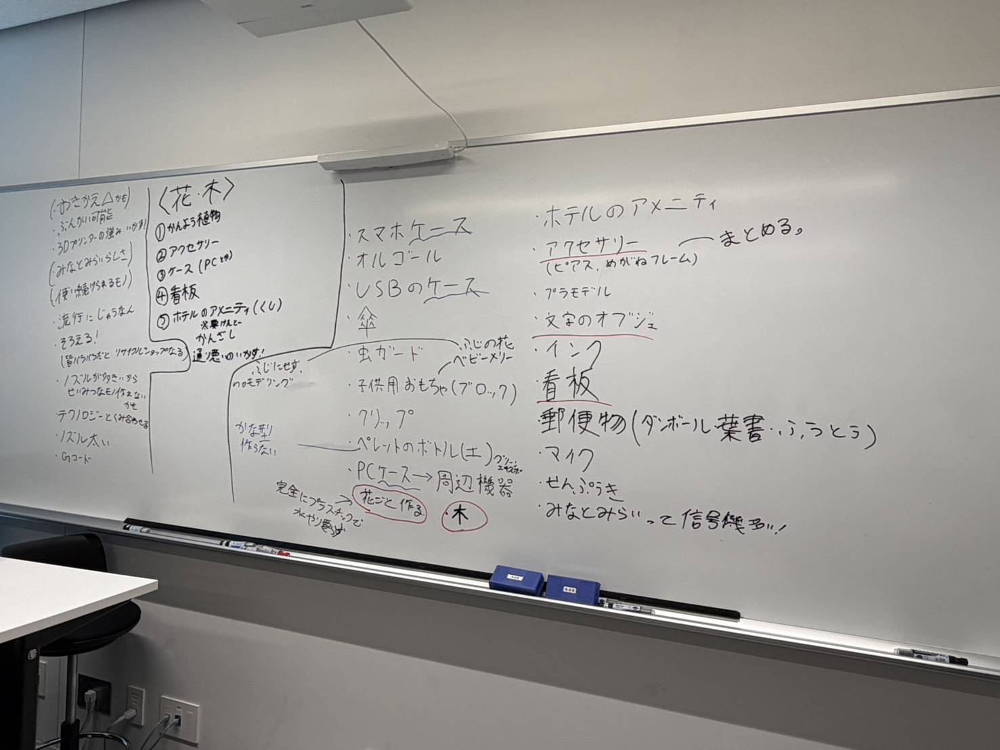

チームプロジェクト方向決め
これからチームでプロジェクトを進めていくために、その方向性を決めた。まず何を作るのか？どういったコンセプトで作っていくのかについて話し合って行った。
最初は実用性のあるものを3Dプリンターを使い製作していく流れであったが、既存のものの
素材の置き換えだけでは弱いと言うことから、コンセプトを決めることにした。
その結果、”植物”をコンセプトに作品を製作し展示会を開くと言う方向になった。
各自まずは食履というお題をもとにアイデアの発散と収束、その実行ののちまた一度みんなで話し合い
どのようにまとめ展示するか話し合うという形でまとまった。
実際に話合う過程で出てきたアイデアたち

自身のアイデア
話がまとまり自分自身が作るものを決める段階へと進み、何を作りたいか考え始めた。しかし、植物というコンセプトがあることに助けられ前より考えやすくなったが、
それでも明確なものは思いつかなかった。
そこで、まずは作品を通して誰にどのようなことを伝えたいのか、それを考えることにした。
メッセージ
まず、今回のプロジェクトは横浜市が単一素材の使用済みクリアファイルを回収して作ったペレット素材を、僕たち大学生が再生プラ素材として活用し循環型経済について考えるイベントなどを実施するという
プロジェクトである。それを踏まえ、自分はこのプロジェクトを通し、普段ゴミとして廃棄したりしている
ものにも再生の可能性はあり、普段身近にしているものにおいてもそうであるということをクリアファイ
ルから作った再生ペレットという事実を通して伝えたいと思った。また、リサイクルやサーキュラーエコノミー
に関心がなった人や、その必要性について疑問を抱えている人にこそ伝えたいと思った。「サーキュラーエコノミー
に真剣に取り組まないとこういう悪いことが起きる」という説得の仕方よりも、どちらかといえば「こんな可能性が
あるんだな」というポジティブな伝え方をしたいと思った。